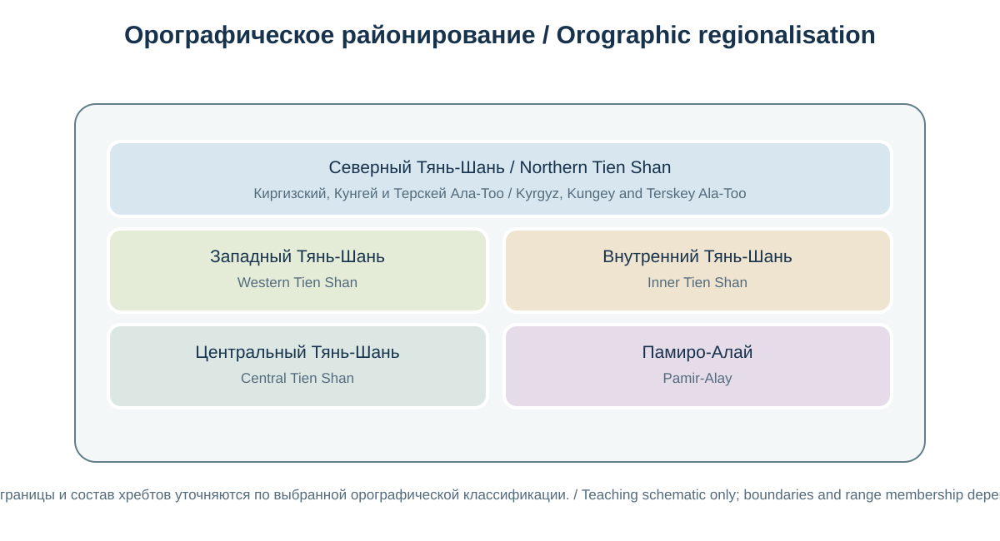
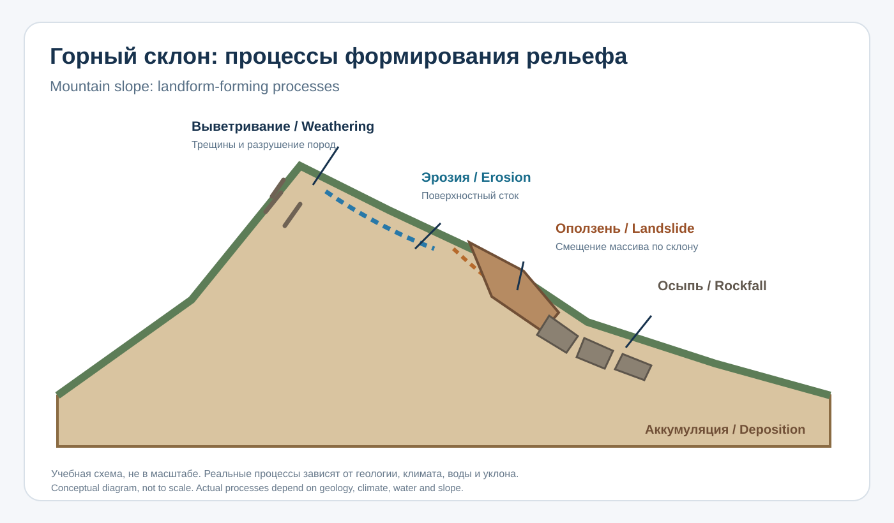
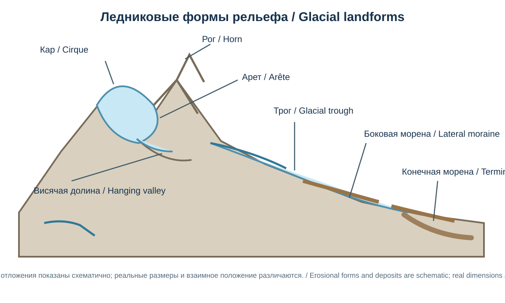
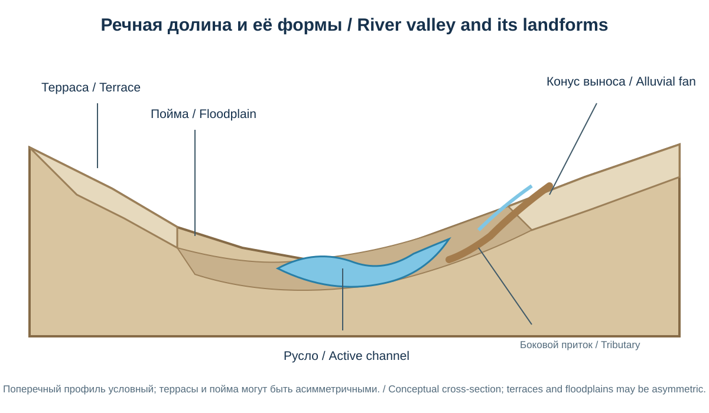

Глава 18. Геология, горные системы и рельеф Кыргызстана
Chapter 18. Geology, Mountain Systems and Relief of Kyrgyzstan
Часть IV. Кыргызстан — природная география / Part IV. Kyrgyzstan — Physical Geography
Научно-образовательный атлас / Scientific and Educational Atlas
Цели главыChapter objectives
После изучения главы читатель сможет: - объяснять геологическую неоднородность Тянь-Шаня и Памиро-Алая; - различать географическое и тектоническое районирование горной страны; - читать орографическую карту и сопоставлять хребты, долины, котловины и перевалы; - описывать основные процессы формирования горного рельефа; - распознавать ледниковые, речные, склоновые и карстовые формы; - оценивать геологические ресурсы и природные опасности с учётом неопределённости данных.
After studying this chapter, readers should be able to explain the geological structure of the Tien Shan and Pamir-Alay, distinguish geographic from tectonic regionalisation, interpret an orographic map, identify major landform-forming processes, and assess geological resources and hazards.
18.1. Кыргызстан — страна высокогорного рельефаKyrgyzstan: A Mountainous Country
Дополнительная обзорная карта рельефаSupplementary relief overview

*Blue Green Atlas, «Free relief map of Kyrgyzstan», CC BY 4.0. Проекция Меркатора; источники рельефа — NASA SRTM3 (около 90 м), батиметрии — GEBCO 2019, озёр — HydroLAKES, рек — HydroATLAS, городов — VMap0. На странице не указаны дата сборки карты, вертикальная система отсчёта и оценка точности. Поэтому это обзорная учебная карта, а не валидированная современная DEM и не источник для точных высот/юридических границ.Blue Green Atlas, “Free relief map of Kyrgyzstan”, CC BY 4.0. Mercator projection; relief from NASA SRTM3 (~90 m), bathymetry from GEBCO 2019, lakes from HydroLAKES, rivers from HydroATLAS and cities from VMap0. The page does not state map compilation date, vertical reference or accuracy assessment. It is therefore a teaching overview, not a validated current DEM or an authority for exact elevations/legal boundaries. Source: Blue Green Atlas.
Кыргызстан расположен в пределах двух крупных горных систем Центральной Азии — Тянь-Шаня и Памиро-Алая. Основная часть территории представляет собой горы, межгорные впадины, высокогорные плато и речные долины. Рельеф отличается резкими перепадами высот: от низких участков Ферганской долины до высочайших вершин Центрального Тянь-Шаня.
Горный характер территории определяет не только ландшафты, но и размещение населения, транспортных коридоров, пастбищ, водных ресурсов, месторождений и зон природного риска. При этом горы нельзя рассматривать как единый однородный массив: отдельные хребты различаются возрастом пород, историей деформаций, высотой, оледенением и современными геоморфологическими процессами.
Kyrgyzstan occupies parts of two major Central Asian mountain systems: the Tien Shan and the Pamir-Alay. Its landscape is a complex assemblage of ranges, intermontane basins, high plateaus and river valleys. Strong elevation contrasts influence settlement, transport, grazing, water resources, mineral distribution and natural hazards.
Важно / Important. Доля территории, относимая к горам, зависит от принятого определения горности и метода картографического подсчёта. Поэтому в атласе предпочтительно показывать высотную структуру и морфологические единицы на карте, а не приводить одну условную долю как универсальную характеристику.
Основа высотных карт и цифровых моделей рельефаVertical Reference for Elevation Maps and Digital Elevation Models
Для Кыргызстана при работе с высотами необходимо различать горизонтальную систему координат и вертикальную систему отсчёта. В аналитическом докладе ЕЭК ООН (UNESCAP, декабрь 2020 года) для страны указана Балтийская система высот 1977 года; в AIP Кыргызстана GEN 2.1, действующем с 6 августа 2026 года, отмечено использование среднемноголетнего уровня Балтийского моря как вертикальной основы и отсутствие применения модели геоида в указанном контексте. Эти сведения дают национальный ориентир, но не доказывают, что каждая цифровая модель рельефа, спутниковый продукт, геологическая карта или инженерная съёмка использует одну и ту же реализацию высотной системы.
При подготовке гипсометрических карт, профилей хребтов, оценок высоты ледников и расчётов уклонов необходимо фиксировать источник DEM, дату/версию, разрешение, горизонтальную CRS, вертикальный датум, тип высоты (эллипсоидальная или относящаяся к уровенной поверхности), использованную модель геоида/квазигеоида, если она применялась, и вертикальную точность. Не следует напрямую смешивать высоты из разных систем отсчёта или считать, что преобразование горизонтальных координат автоматически преобразует высоты.
For elevation data in Kyrgyzstan, the horizontal coordinate reference system must be distinguished from the vertical reference system. A UNESCAP analytical report (December 2020) identifies the 1977 Baltic Height System for the country. Kyrgyzstan's AIP GEN 2.1, effective 6 August 2026, refers to long-term mean Baltic Sea level as the vertical reference and notes that a geoid model is not used in the stated context. These sources provide a national reference, but they do not prove that every digital elevation model, satellite product, geological map or engineering survey uses an identical realisation of the height system.
For hypsometric maps, mountain profiles, glacier-elevation assessments and slope calculations, record the DEM source, date/version, resolution, horizontal CRS, vertical datum, height type (ellipsoidal or gravity-related), geoid/quasigeoid model if used, and vertical accuracy. Do not directly combine elevations from different reference systems or assume that transforming horizontal coordinates automatically transforms heights.
Доступность моделей рельефа и картографических источниковAvailability of Elevation Models and Map Sources
В каталоге GeoNode Центрально-Азиатского института прикладных исследований Земли (ЦАИИЗ/CAIAG) опубликован растровый слой Kyrg_AsterTM2_DEM_utm, описанный как ASTER GDEM с разрешением 30 м (публикация слоя — 10 декабря 2021 года). В открытых метаданных указана проекция EPSG:32643 и доступны сервисы WMS/WCS и выгрузка GeoTIFF, однако лицензия обозначена как неуказанная; также отсутствуют сведения о вертикальном датуме, вертикальной точности, версии исходного продукта и проверке по наземным контрольным данным. Поэтому этот слой можно рассматривать как предварительный источник для обзорной визуализации, но не как автоматически одобренную основу для количественных расчётов высот, ледниковых изменений или инженерной оценки. Перед использованием необходимо проверить теги самого GeoTIFF, лицензию и происхождение данных.
В рамках проекта RESILAND в 2026 году были приобретены цифровые модели рельефа с разрешением до 3 м для 14 приоритетных участков общей площадью около 6 000 га. Они предназначены для моделирования селей, наводнений и оползней. Эти данные важны для локального анализа природных опасностей, но не образуют сплошную национальную модель рельефа; опубликованное сообщение не содержит самих растров и полного набора технических метаданных.
11 марта 2026 года Министерство природных ресурсов сообщило о подготовке совместно с Институтом геологии им. М. М. Адышева НАН КР двухтомного Атласа геологических, геофизических и минерагенических карт Кыргызстана на русском и английском языках. До выхода и проверки самого издания его следует обозначать как проект в подготовке, а не как уже опубликованный источник карт.
ЦАИИЗ также указывает, что Каталог ледников СССР (1968–1982) и карта «Современное оледенение» масштаба 1:500 000, основанная на снимках 1977–1980 годов, долгое время обновлялись редко и лишь для отдельных ледников. Эти материалы пригодны для исторического контекста, но не должны использоваться как самостоятельная характеристика современного состояния оледенения. Для актуальных карт необходимо указывать даты спутниковых снимков, сезон, критерии выделения ледников, обработку покрытых обломками льдов и оценку неопределённости границ.
The Central-Asian Institute for Applied Geosciences (CAIAG) GeoNode catalogue contains a raster layer named Kyrg_AsterTM2_DEM_utm, described as ASTER GDEM at 30 m resolution (layer published on 10 December 2021). Its public metadata lists EPSG:32643 and WMS/WCS and GeoTIFF access, but the licence is unspecified and the record does not provide a vertical datum, vertical accuracy, source-product version or ground-control validation. It is therefore a provisional candidate for overview visualisation, not an automatically approved basis for quantitative elevation, glacier-change or engineering analysis. Verify the GeoTIFF tags, licence and data lineage before use.
Under the RESILAND project, DEMs with resolution up to 3 m were procured in 2026 for 14 priority sites covering approximately 6,000 hectares, for debris-flow, flood and landslide modelling. These are valuable local hazard-analysis datasets, but they do not constitute seamless national DEM coverage; the public announcement does not provide the rasters or full technical metadata.
On 11 March 2026, the Ministry of Natural Resources announced preparation, with the M. M. Adyshev Institute of Geology of the National Academy of Sciences, of a two-volume Atlas of Geological, Geophysical and Mineragenic Maps of Kyrgyzstan in Russian and English. Until the volumes are published and their maps and metadata inspected, this must be described as an atlas project in preparation, not as an already published cartographic source.
CAIAG also notes that the USSR Glacier Catalogue (1968–1982) and the 1:500,000 “Present Glaciation” map based on 1977–1980 imagery were rarely updated in later years and only for some glaciers. These sources are useful for historical context but must not be used alone to describe present-day glacier conditions. Current maps should identify image dates and season, glacier-delineation criteria, treatment of debris-covered ice and boundary uncertainty.
18.2. Геологическое районирование и тектонический каркасGeological Regionalisation and Tectonic Framework
18.2.1. Географическое и тектоническое районирование
Географическое деление описывает положение и морфологию горных систем: Северный, Внутренний, Центральный и Западный Тянь-Шань, а также Памиро-Алай. В геологии используются другие схемы — по возрасту пород, структурам складчатости, террейнам, сутурам и крупным разломам. Границы этих районов не всегда совпадают.
Для Центрального Тянь-Шаня в научной литературе часто выделяют Северо-Тянь-Шаньский, Срединно-Тянь-Шаньский и Южно-Тянь-Шаньский террейны. Это тектонические блоки и пояса, сформированные в результате длительной палеозойской эволюции и последующего сближения континентальных фрагментов. Терминология в разных публикациях может различаться; при чтении геологических карт следует пользоваться легендой конкретного источника.
18.2.2. Основные этапы геологической истории
| Этап | Геологические события | Значение для современного рельефа |
|---|---|---|
| Докембрий | Формирование древних кристаллических оснований и континентальных блоков | Создание устойчивых фрагментов фундамента |
| Ранний–средний палеозой | Осадконакопление, вулканизм, раскрытие и развитие океанических бассейнов, образование островных дуг | Формирование разновозрастных комплексов пород |
| Поздний палеозой | Сближение террейнов, закрытие океанических бассейнов, складчатость, надвиги и гранитоидный магматизм | Возникновение складчатого и интрузивного каркаса |
| Мезозой | Преобразование и местами денудация древнего горного сооружения; накопление осадков в бассейнах | Формирование поверхностей выравнивания и осадочных толщ |
| Кайнозой | Реактивация древних структур, сжатие, поднятие, разломообразование и развитие межгорных впадин | Возникновение современного высокогорного Тянь-Шаня |
| Четвертичный период | Оледенения, речная эрозия, склоновые процессы и накопление рыхлых отложений | Создание значительной части современного микрорельефа и долинных форм |
Палеозойская история Тянь-Шаня связана с развитием и закрытием океанических бассейнов, аккрецией островных дуг и столкновением континентальных блоков. В кайнозое столкновение Индийской и Евразийской плит вызвало перераспределение напряжений далеко к северу от Гималаев. Древние структуры Тянь-Шаня были повторно активизированы, а горные сооружения и межгорные впадины получили современное выражение.
18.2.3. Разломы и складчатые структуры
Тянь-Шань пересечён системой крупных разломов. Среди наиболее известных — Таласо-Ферганский разлом, протягивающийся в северо-западном направлении и разделяющий геологические блоки Западного и Центрального Тянь-Шаня в ряде региональных схем. Его история включает значительные горизонтальные смещения; оценки суммарной амплитуды зависят от выбранных геологических маркеров и интерпретации этапов движения.
Наряду со сдвигами широко развиты надвиги и взбросы, связанные с горизонтальным сжатием. В межгорных впадинах формируются складчатые осадочные толщи, а по краям котловин активные разломы могут сопровождаться поднятием бортов и опусканием отдельных блоков. Современная деформация неоднородна: она концентрируется в отдельных зонах и не означает одинаковой скорости поднятия каждого хребта.
18.2.4. Геологические породы
В пределах Кыргызстана встречаются: - метаморфические породы древнего фундамента — гнейсы, сланцы, кварциты и амфиболиты; - осадочные комплексы — известняки, доломиты, песчаники, алевролиты, аргиллиты и конгломераты; - вулканогенные и вулканогенно-осадочные породы; - интрузивные магматические породы — граниты, гранодиориты, диориты и другие; - четвертичные рыхлые отложения — аллювий, пролювий, делювий, морены, лёссовидные и озёрные осадки.
Литологический состав влияет на форму склонов, устойчивость пород, развитие карста, характер осыпей и условия залегания подземных вод.
18.2.1 Geographic and tectonic regionalisation
Geographic divisions describe the position and morphology of mountain systems: the Northern, Inner, Central and Western Tien Shan, as well as the Pamir-Alay. Geology uses different schemes based on rock age, fold structures, terranes, sutures and major faults. The boundaries of these regions do not always coincide.
For the Central Tien Shan, scientific literature often distinguishes the Northern Tien Shan, Middle Tien Shan and Southern Tien Shan terranes. These are tectonic blocks and belts formed through long Paleozoic evolution and the subsequent convergence of continental fragments. Terminology may differ among publications; geological maps should therefore be interpreted using the legend of the specific source.
18.2.2 Main stages of geological history
| Stage | Geological events | Significance for modern relief |
|---|---|---|
| Precambrian | Formation of ancient crystalline basement and continental blocks | Creation of stable basement fragments |
| Early–Middle Paleozoic | Sedimentation, volcanism, opening and development of ocean basins, formation of island arcs | Formation of rock complexes of different ages |
| Late Paleozoic | Terrane convergence, closure of ocean basins, folding, thrusting and granitoid magmatism | Formation of the folded and intrusive framework |
| Mesozoic | Transformation and local denudation of the older mountain structure; sediment accumulation in basins | Formation of planation surfaces and sedimentary sequences |
| Cenozoic | Reactivation of inherited structures, compression, uplift, faulting and development of intermontane basins | Development of the modern high-mountain Tien Shan |
| Quaternary | Glaciations, river erosion, slope processes and accumulation of unconsolidated deposits | Formation of much of the present microrelief and valley landforms |
The Paleozoic history of the Tien Shan involved the development and closure of ocean basins, accretion of island arcs and collision of continental blocks. During the Cenozoic, the collision of the Indian and Eurasian plates redistributed stresses far north of the Himalayas. Ancient Tien Shan structures were reactivated, and mountain ranges and intermontane basins acquired much of their modern expression.
18.2.3 Faults and fold structures
The Tien Shan is crossed by a system of major faults. One of the best known is the Talas-Fergana Fault, which trends northwest and separates geological blocks of the Western and Central Tien Shan in some regional schemes. Its history includes substantial horizontal displacement; estimates of total displacement depend on the geological markers selected and on the interpretation of different movement stages.
Thrust and reverse faults associated with horizontal compression are also widespread. Folded sedimentary sequences develop in intermontane basins, while active faults along basin margins may accompany uplift of basin edges and subsidence of individual blocks. Modern deformation is heterogeneous: it is concentrated in particular zones and does not imply that every range is rising at the same rate.
18.2.4 Rock types
Kyrgyzstan contains: - metamorphic rocks of ancient basement, including gneiss, schist, quartzite and amphibolite; - sedimentary sequences, including limestone, dolomite, sandstone, siltstone, mudstone and conglomerate; - volcanic and volcaniclastic rocks; - intrusive igneous rocks, including granite, granodiorite and diorite; and - Quaternary unconsolidated deposits, including alluvium, proluvium, colluvium, moraines, loess-like deposits and lake sediments.
Lithology influences slope form, rock stability, karst development, scree formation and groundwater conditions.
18.3. Основные горные районыMajor Mountain Regions

Схема показывает учебную группировку горных систем, а не точные границы районов или тектонических террейнов.Schematic teaching classification, not precise regional boundaries or tectonic terranes.
EN: Orographic diagram of the Tien Shan and Pamir–Alay showing the Northern, Inner, Central and Western Tien Shan; do not conflate geographic regionalisation with tectonic terranes.
18.3.1. Северный Тянь-ШаньNorthern Tien Shan
Северный Тянь-Шань включает хребты, обращённые к Чуйской и Таласской долинам, а также горные массивы вокруг западной и северной части Иссык-Кульской котловины. Для региона характерны сложное сочетание палеозойских пород, гранитоидных интрузий, складчатых структур и кайнозойских разломов.
Кыргызский Ала-Тоо тянется к югу от Чуйской долины и образует выразительную горную стену над Бишкеком и прилегающими районами. Его склоны глубоко расчленены ущельями, по которым стекают реки и временные водотоки. В верхних поясах распространены скальные гребни, кары и небольшие ледниковые формы.
Таласский Ала-Тоо ограничивает Таласскую долину с юга и относится к важным орографическим рубежам северо-западной части страны. Его рельеф сочетает высокие гребни, крутые склоны и межгорные долины.
Кунгей Ала-Тоо протягивается вдоль северного побережья Иссык-Куля. Северные склоны обращены к долинам и бассейну Чу, южные — к озёрной котловине. Контраст экспозиции склонов влияет на увлажнение, растительность, снежный режим и характер эрозии.
18.3.2. Внутренний и Центральный Тянь-ШаньInner and Central Tien Shan
Внутренний Тянь-Шань — система высоких межгорных долин и хребтов, расположенных между внешними горными дугами. Важную роль играют Нарынская, Суусамырская, Джумгальская и другие впадины. Высокогорные плато и широкие долины здесь соседствуют с узкими ущельями и крутыми водоразделами.
Терскей Ала-Тоо окаймляет Иссык-Кульскую котловину с юга. На его северном склоне находятся многочисленные ущелья, ледниковые долины и водосборы, питающие реки, впадающие в озеро. Южный склон переходит к высокогорным внутренним районам.
Суусамыр-Тоо, Молдо-Тоо и Джумгаль-Тоо формируют сложную систему хребтов и водоразделов Внутреннего Тянь-Шаня. Их значение определяется не только высотой, но и разделением бассейнов рек, пастбищных пространств и транспортных направлений.
Ак-Шыйрак — высокогорный массив Центрального Тянь-Шаня, известный ледниками, каменистыми плато и истоками крупных рек. Он представляет собой важный район взаимодействия ледниковых, речных и склоновых процессов.
18.3.3. Центральный Тянь-ШаньCentral Tien Shan
Центральный Тянь-Шань — наиболее высокогорная часть Кыргызстана. Здесь сосредоточены крупные ледниковые узлы, высокие пики и массивы, включая районы Сары-Джаза, Иныльчека, Какшаал-Тоо и хребтов, окружающих верховья Нарына и его притоков.
Какшаал-Тоо — мощный хребет на границе Кыргызстана и Китая. Его восточные и центральные участки включают высокие ледниковые вершины. В этой горной области находится пик Жеңиш (Победы), высочайшая вершина Кыргызстана.
Сары-Джазский район характеризуется высокими скальными гребнями, ледниковыми долинами и сложным сочетанием тектонических структур. Здесь развиты мощные ледниковые системы, а рельеф отличается большой вертикальной расчленённостью.
18.3.4. Западный и Южный Тянь-ШаньWestern and Southern Tien Shan
Западный Тянь-Шань отличается более сложной мозаикой средневысотных хребтов, глубоких речных долин и участков лесной растительности. Здесь важны Чаткальский, Ферганский и другие хребты. Геологически район включает палеозойские осадочные и вулканогенные комплексы, интрузивные тела и поздние деформационные структуры.
Чаткальский хребет расположен в западной части Тянь-Шаня и связан с бассейнами рек Чаткал и Пскем. Его склоны расчленены глубокими ущельями; высотная поясность выражена сменой долинных ландшафтов, лесных поясов, субальпийских и альпийских лугов, а выше — скальных и нивальных участков.
Ферганский хребет отделяет Ферганскую долину от внутренних районов Тянь-Шаня. Он имеет важное водораздельное значение и влияет на климатические различия между западными долинами и более высокими внутренними территориями.
18.3.5. Памиро-АлайPamir-Alay
Южная и юго-западная часть Кыргызстана связана с горной системой Памиро-Алая. Её северные отроги и хребты образуют переход от Ферганской долины к высокогорьям Алая и Заалайского хребта.
Алайский хребет протягивается в широтном направлении к северу от Алайской долины. Его рельеф включает высокие гребни, глубокие долины и участки древнего оледенения.
Заалайский хребет (Транс-Алай) формирует северную границу Памира и южную горную стену Алайской долины. На его востоке расположен массив пика Ленина (в Таджикистане — пик Абу Али ибн Сино), одна из наиболее известных вершин региона. В западной части хребта высоты и морфология постепенно меняются.
Туркестанский хребет и связанные с ним горные массивы юго-запада имеют выраженные скальные формы, глубокие ущелья и локальные ледниковые участки. Их географическое положение связывает Кыргызстан с горными районами Таджикистана и Узбекистана.
18.3.1 Northern Tien Shan
The Northern Tien Shan includes ranges facing the Chu and Talas valleys, as well as mountain massifs around the western and northern parts of the Issyk-Kul Basin. The region combines Paleozoic rocks, granitoid intrusions, folded structures and Cenozoic faults.
The Kyrgyz Ala-Too extends south of the Chu Valley and forms a prominent mountain wall above Bishkek and neighbouring districts. Its slopes are deeply dissected by gorges carrying rivers and temporary streams. Upper elevations contain rocky ridges, cirques and small glacial landforms.
The Talas Ala-Too forms the southern boundary of the Talas Valley and is an important orographic divide in the north-western part of the country. Its relief combines high ridges, steep slopes and intermontane valleys.
The Kungey Ala-Too extends along the northern shore of Issyk-Kul. Its northern slopes face valleys and the Chu Basin, while its southern slopes descend towards the lake basin. Contrasts in slope aspect affect moisture, vegetation, snow conditions and erosion.
18.3.2 Inner and Central Tien Shan
The Inner Tien Shan is a system of high intermontane valleys and ranges located between the outer mountain arcs. The Naryn, Suusamyr, Jumgal and other depressions are important features. High plateaus and broad valleys occur alongside narrow gorges and steep watersheds.
The Terskey Ala-Too borders the Issyk-Kul Basin to the south. Its northern slope contains numerous gorges, glacial valleys and catchments feeding rivers that flow into the lake. The southern slope transitions towards the high-mountain interior.
The Suusamyr-Too, Moldo-Too and Jumgal-Too form a complex system of ranges and watersheds in the Inner Tien Shan. Their significance is not determined by elevation alone: they also divide river basins, pasture areas and transport routes.
Ak-Shyyrak is a high-mountain massif in the Central Tien Shan, known for glaciers, stony plateaus and the headwaters of major rivers. It is an important area where glacial, fluvial and slope processes interact.
18.3.3 Central Tien Shan
The Central Tien Shan is the highest mountainous part of Kyrgyzstan. It contains major glacial centres, high peaks and massifs, including the Sary-Jaz and Inylchek areas, Kakshaal-Too and ranges surrounding the headwaters of the Naryn and its tributaries.
Kakshaal-Too is a major range on the border between Kyrgyzstan and China. Its eastern and central sections include high glaciated peaks. Jengish Chokusu, the highest mountain in Kyrgyzstan, is located in this mountain area.
The Sary-Jaz area is characterised by high rocky ridges, glacial valleys and a complex combination of tectonic structures. Large glacier systems are developed here, and the relief is strongly dissected vertically.
18.3.4 Western and Southern Tien Shan
The Western Tien Shan has a more complex mosaic of medium-height ranges, deep river valleys and areas of forest vegetation. The Chatkal, Fergana and other ranges are important features. Geologically, the region includes Paleozoic sedimentary and volcanic sequences, intrusive bodies and later deformation structures.
The Chatkal Range lies in the western Tien Shan and is associated with the Chatkal and Pskem river basins. Its slopes are dissected by deep gorges. Altitudinal zonation is expressed through a sequence of valley landscapes, forest belts, subalpine and alpine meadows, and higher rocky and nival areas.
The Fergana Range separates the Fergana Valley from the inner Tien Shan. It is an important watershed and influences climatic contrasts between western valleys and higher interior areas.
18.3.5 Pamir-Alay
The southern and south-western part of Kyrgyzstan is associated with the Pamir-Alay mountain system. Its northern foothills and ranges form a transition from the Fergana Valley to the highlands of Alay and the Trans-Alay Range.
The Alay Range extends broadly east–west north of the Alay Valley. Its relief includes high ridges, deep valleys and areas shaped by ancient glaciation.
The Trans-Alay Range forms the northern boundary of the Pamir and the southern mountain wall of the Alay Valley. The Lenin Peak massif (known in Tajikistan as Abu Ali Ibn Sina Peak) is located in its eastern part and is one of the region's best-known summits. Elevations and landforms gradually change towards the western part of the range.
The Turkestan Range and associated mountain massifs in the south-west have pronounced rocky landforms, deep gorges and local glaciated areas. Their geographic position links Kyrgyzstan with the mountain regions of Tajikistan and Uzbekistan.
18.4. Главные хребты: сравнительная орографическая характеристикаMajor Ranges: Comparative Orographic Overview
Таблица даёт обзор наиболее известных хребтов, но не заменяет подробную топографическую карту. Длины и высоты в разных справочниках могут отличаться из-за различий в проведении осевых линий, границ хребтов, выбора высшей точки и качества исходной съёмки.
| Хребет / Range | Положение и роль / Location and role | Ориентировочная высшая точка / Approximate high point |
|---|---|---|
| Кыргызский Ала-Тоо / Kyrgyz Ala-Too | К югу от Чуйской долины; северный Тянь-Шань | около 4 855 м |
| Таласский Ала-Тоо / Talas Ala-Too | Южная граница Таласской долины | около 4 488 м |
| Кунгей Ала-Тоо / Kungey Ala-Too | Северное обрамление Иссык-Кульской котловины | около 4 771 м |
| Терскей Ала-Тоо / Terskey Ala-Too | Южное обрамление Иссык-Кульской котловины | около 5 280 м |
| Суусамыр-Тоо / Suusamyr-Too | Внутренний Тянь-Шань, район Суусамырской долины | значения зависят от принятого контура хребта |
| Молдо-Тоо / Moldo-Too | Внутренний Тянь-Шань, между межгорными долинами | локальные вершины выше 4 000 м |
| Джумгаль-Тоо / Jumgal-Too | Район Джумгальской долины | около 4 281 м |
| Ат-Башы / At-Bashy Range | Южнее Нарынской впадины | около 4 786 м |
| Какшаал-Тоо / Kakshaal-Too | Центральный Тянь-Шань, граница с Китаем | пик Жеңиш, 7 439 м |
| Ферганский хребет / Fergana Range | Между Ферганской долиной и внутренним Тянь-Шанем | около 4 940 м |
| Чаткальский хребет / Chatkal Range | Западный Тянь-Шань | около 4 503 м |
| Алайский хребет / Alay Range | Севернее Алайской долины | около 5 880 м |
| Заалайский хребет / Trans-Alay Range | Южная граница Алайской долины | пик Ленина (в Таджикистане — Абу Али ибн Сино), около 7 134 м |
| Туркестанский хребет / Turkestan Range | Юго-западный горный пояс | локальные вершины около 5 600 м |
Методическое примечание. Приведённые ориентиры высот следует сверять с официальными топографическими картами и актуальными цифровыми моделями рельефа перед подготовкой финальной картографической подписи. Для отдельных хребтов в литературе встречаются разные названия высших вершин и разные границы самого хребта.
The main mountain ranges of Kyrgyzstan form a complex system of ridges and watersheds. Their names and boundaries may differ slightly among geographic classifications.
| Range | Geographic position and characteristics |
|---|---|
| Kyrgyz Ala-Too | Extends along the southern side of the Chu Valley; contains high ridges, deep gorges and glacial landforms. |
| Talas Ala-Too | Forms the southern mountain wall of the Talas Valley and is an important watershed in north-western Kyrgyzstan. |
| Kungey Ala-Too | Runs along the northern side of the Issyk-Kul Basin; its slopes descend towards the lake and the Chu Basin. |
| Terskey Ala-Too | Borders the Issyk-Kul Basin to the south; its northern slopes contain many river valleys and glacial landforms. |
| Suusamyr-Too | A mountain range in the Inner Tien Shan, associated with high valleys and pasture landscapes. |
| Moldo-Too | A range in the Inner Tien Shan that separates intermontane valleys and river catchments. |
| Jumgal-Too | A mountain range in the Jumgal area, forming local watersheds and steep valley slopes. |
| At-Bashy Range | Lies south of the Naryn Basin and forms part of the high mountain terrain of the Inner Tien Shan. |
| Kakshaal-Too | A major range of the Central Tien Shan along the border with China; it includes Jengish Chokusu, Kyrgyzstan’s highest peak. |
| Fergana Range | Separates the Fergana Valley from the Inner Tien Shan and forms a major watershed. |
| Chatkal Range | Part of the Western Tien Shan, with deep river gorges, forested slopes and high-mountain meadows. |
| Alay Range | Extends north of the Alay Valley and includes high ridges and glacially shaped valleys. |
| Trans-Alay Range | Forms the southern wall of the Alay Valley and the northern margin of the Pamir. |
| Turkestan Range | Part of the Pamir-Alay mountain system in the south-west, with rocky slopes and deep gorges. |
These descriptions are geographic summaries, not a substitute for a georeferenced range-boundary dataset.
18.5. Высочайшие вершины КыргызстанаHighest Peaks of Kyrgyzstan
Фотографическая подборкаPhoto set

Автор: Maryliflower, 2021. CC BY-SA 4.0. Источник и лицензия: Wikimedia Commons. Изображение не изменено.Author: Maryliflower, 2021. CC BY-SA 4.0. Source and licence: Wikimedia Commons. Unmodified.

Автор: Chen Zhao, 2009. CC BY 2.0. Источник и лицензия: Wikimedia Commons. Изображение не изменено.Author: Chen Zhao, 2009. CC BY 2.0. Source and licence: Wikimedia Commons. Unmodified.

Автор: Benoît Vicart, 2019. CC0 1.0. Источник и статус общественного достояния: Wikimedia Commons. Изображение не изменено.Author: Benoît Vicart, 2019. CC0 1.0. Source and public-domain dedication: Wikimedia Commons. Unmodified.
Подписи высот в тексте главы относятся к отдельным официальным источникам; фотографии не являются измерительным или высотным доказательством.Elevations stated in the chapter are supported by separate official references; photographs are not elevation evidence.
18.5.1. Пик Жеңиш (Победы)Jengish Chokusu (Victory Peak)
Пик Жеңиш, известный также как пик Победы, достигает примерно 7 439 м и является высочайшей вершиной Кыргызстана. Он расположен в массиве Какшаал-Тоо в Центральном Тянь-Шане, в приграничном высокогорном районе. Это массивная ледниково-скальная вершина с суровыми погодными условиями, сложным рельефом и значительной лавинной опасностью.
18.5.2. Хан-ТенгриKhan Tengri
Хан-Тенгри — одна из наиболее узнаваемых вершин Тянь-Шаня, расположенная в районе стыка границ Кыргызстана, Казахстана и Китая. Часто указывается высота 6 995 м для скальной вершины. В некоторых источниках приводится значение около 7 010 м, когда учитывается ледниковая шапка. В атласе необходимо явно указывать, какое именно измерение использовано.
18.5.3. Пик ЛенинаLenin Peak (Lenin Atyndagy Choku)
В Кыргызстане используется название пик Ленина (кырг. Ленин атындагы чоку); в Таджикистане вершина официально известна как пик Абу Али ибн Сино. Она расположена в Заалайском хребте на границе двух государств; обычно приводимая высота составляет около 7 134 м. На карте следует указывать название, принятое для соответствующей стороны границы, а второе название давать как вариант с явным указанием страны.
18.5.4. Другие высокие вершины
В Центральном Тянь-Шане выделяются пики Военных Топографов, Дружбы, Семёнова-Тянь-Шанского и другие высокие вершины. В Памиро-Алае известны пики Дзержинского и другие вершины Заалайского и Алайского горных районов. Их высоты и названия требуют отдельной проверки по топографическим и альпинистским источникам: в разных изданиях могут встречаться варианты транслитерации и округления.
| Вершина / Peak | Горный район / Mountain region | Высота, ориентир / Approx. elevation |
|---|---|---|
| Жеңиш (Победы) / Jengish Chokusu | Какшаал-Тоо, Центральный Тянь-Шань | 7 439 м |
| Хан-Тенгри / Khan Tengri | Центральный Тянь-Шань | 6 995 м (скала); около 7 010 м с ледником |
| Пик Ленина (Кыргызстан) / Lenin Peak (Kyrgyzstan); пик Абу Али ибн Сино (Таджикистан) / Abu Ali Ibn Sina Peak (Tajikistan) | Заалайский хребет / Trans-Alay Range | около 7 134 м |
Высоты в горах могут различаться в зависимости от системы высот, метода измерения, состояния ледниковой поверхности и даты съёмки. Для научной карты следует указывать источник, дату и тип высоты (скальная вершина или поверхность ледника).
Kyrgyzstan contains some of the highest peaks of the Tien Shan and Pamir-Alay. Elevations should be quoted with the source and the measurement convention, because different publications may use different reference surfaces or summit definitions.
- Jengish Chokusu (Victory Peak) — 7,439 m; the highest mountain in Kyrgyzstan, located in the Central Tien Shan.
- Khan Tengri — 6,995 m for the rocky summit; the ice cap is often reported at approximately 7,010 m. The two values should not be presented as the same measurement.
- Lenin Peak — 7,134 m; located in the Trans-Alay Range. In Tajikistan it is also known as Abu Ali Ibn Sina Peak.
- Other high peaks and glaciated massifs include those in the Sary-Jaz, Ak-Shyyrak, Kakshaal-Too and Alay mountain areas.
A peak's elevation does not by itself describe its prominence, isolation, climbing difficulty or glaciological significance. Those characteristics require separate measurements and definitions.
18.6. Межгорные впадины, долины и платоIntermontane Basins, Valleys and Plateaus
Межгорные впадины — важнейший элемент рельефа Кыргызстана. Они формируются в результате тектонических движений, эрозии, аккумуляции осадков и изменений речной сети. Их днища могут быть заполнены мощными толщами озёрных, речных, пролювиальных и ледниковых отложений.
К важнейшим межгорным и долинным пространствам относятся: - Чуйская долина — широкая предгорная равнина на севере, важный район расселения и земледелия; - Таласская долина — межгорная впадина северо-западной части страны; - Иссык-Кульская котловина — крупная межгорная впадина с озером, ограниченная Кунгей Ала-Тоо и Терскей Ала-Тоо; - Суусамырская долина — высокогорная долина с сезонно суровым климатом и важными пастбищами; - Нарынская впадина и долина — система высокогорных долин, расчленённых притоками Нарына; - Джумгальская долина — межгорное пространство Внутреннего Тянь-Шаня; - Ат-Башинская долина — высокогорная впадина к югу от Нарына; - Алайская долина — широкая высокогорная долина между Алайским и Заалайским хребтами; - Ферганская долина — крупная межгорная впадина, разделённая государственными границами Кыргызстана, Узбекистана и Таджикистана.
Высокогорные плато и сырты — характерная черта Внутреннего Тянь-Шаня. Они представляют собой относительно выровненные поверхности на больших высотах, расчленённые речными долинами и окружённые хребтами. Сырты имеют важное значение для сезонного выпаса, водосбора и сохранения холодных высокогорных экосистем.
Intermontane basins are a major element of Kyrgyzstan's relief. They form through tectonic movements, erosion, sediment accumulation and changes in river networks. Their floors may contain thick sequences of lacustrine, fluvial, proluvial and glacial deposits.
Important intermontane and valley areas include: - Chuy Valley: a broad northern foothill plain and an important area of settlement and agriculture; - Talas Valley: an intermontane depression in the north-west of the country; - Issyk-Kul Basin: a large intermontane depression containing the lake and bounded by the Kungey Ala-Too and Terskey Ala-Too ranges; - Suusamyr Valley: a high mountain valley with a seasonally severe climate and important pastures; - Naryn depression and valley: a system of high mountain valleys dissected by tributaries of the Naryn River; - Jumgal Valley: an intermontane area in the Inner Tien Shan; - At-Bashy Valley: a high mountain depression south of Naryn; - Alay Valley: a broad high-altitude valley between the Alay and Trans-Alay ranges; and - Fergana Valley: a large intermontane depression divided by the state borders of Kyrgyzstan, Uzbekistan and Tajikistan.
High plateaus and syrts are characteristic of the Inner Tien Shan. They are relatively level surfaces at high elevations, dissected by river valleys and surrounded by mountain ranges. Syrts are important for seasonal grazing, water catchments and the conservation of cold high-mountain ecosystems.
18.7. Процессы формирования рельефаLandform-Forming Processes

Рисунок 18-J / Figure 18-J. Учебная схема выветривания, эрозии, оползания, осыпания и аккумуляцииConceptual diagram of weathering, erosion, landsliding, rockfall and deposition.
Современный рельеф Кыргызстана создаётся взаимодействием эндогенных и экзогенных процессов.
18.7.1. Тектоническое поднятие и деформацияTectonic Uplift and Deformation
Горные сооружения продолжают испытывать деформации. Сжатие вызывает складчатость, надвиги и поднятие блоков, а сдвиговые разломы обеспечивают горизонтальное перемещение отдельных частей земной коры. Поднятие увеличивает потенциальную энергию рельефа и способствует усилению эрозии, однако скорость поднятия различается по районам и геологическим структурам.
18.7.2. ВыветриваниеWeathering
Физическое выветривание особенно интенсивно там, где часто чередуются замерзание и оттаивание воды в трещинах. Химическое выветривание зависит от температуры, влаги и состава пород. Биологическое выветривание связано с воздействием корней растений и почвенных организмов.
В высокогорьях распространены морозное дробление, образование осыпей и каменных россыпей. В более тёплых и влажных западных районах заметнее химическое выветривание и почвообразование.
18.7.3. Речная эрозия и аккумуляцияFluvial Erosion and Deposition
Реки расчленяют горные склоны, формируют V-образные долины, каньоны, пороги и водопады. При снижении уклона или изменении расхода воды происходит аккумуляция наносов: образуются поймы, террасы, конусы выноса и аллювиальные равнины.
Селевые потоки способны за короткое время перемещать большие объёмы обломочного материала. Они особенно опасны в узких ущельях и на конусах выноса у выхода горных рек на равнину.
18.7.4. Ледниковые процессыGlacial Processes
Ледники разрушают и переносят горные породы, углубляют долины и создают характерные формы рельефа. Ледниковая эрозия формирует кары, цирки, троги и острые гребни; аккумуляция создаёт моренные валы и поля. После отступания ледника остаются озёрные котловины, моренные отложения и нестабильные склоны.
18.7.5. Склоновые процессыSlope Processes
К склоновым процессам относятся обвалы, осыпи, оползни, оплывины, медленное перемещение грунта и лавины. Их интенсивность зависит от крутизны склонов, трещиноватости пород, насыщения водой, сезонного промерзания и землетрясений. Дороги, выемки склонов, чрезмерный выпас и изменение дренажа могут повышать уязвимость.
18.7.6. КарстKarst
В районах распространения растворимых пород — прежде всего известняков, доломитов и гипсов — вода формирует карстовые полости, воронки, поноры, подземные каналы и источники. Карстовые процессы влияют на устойчивость поверхности и режим подземных вод. Не всякая воронка является карстовой: её происхождение должно подтверждаться геологическими и гидрогеологическими данными.
Modern relief in Kyrgyzstan is shaped by the interaction of tectonic uplift and several exogenic processes.
Tectonic processes create and reactivate faults, folds, uplifted blocks and intermontane depressions. Earthquakes are a surface expression of active crustal deformation, although not every fault is currently active.
Glacial processes include erosion by moving ice, the formation of cirques and trough valleys, transport of rock debris, and deposition of moraines. Their intensity varies with glacier size, slope, bedrock and climate.
Fluvial processes include river erosion, transport and deposition. They create gorges, floodplains, river terraces, alluvial fans and valley fills.
Slope processes include rockfalls, landslides, debris flows, soil creep and avalanches. They depend on slope angle, lithology, water content, vegetation, seismic shaking and human disturbance.
Weathering breaks down rocks through physical, chemical and biological processes. In high mountains, freeze–thaw cycles are important, while chemical weathering is often stronger in warmer and wetter environments.
These processes operate together. For example, tectonic uplift increases river gradients, which can intensify incision; glacial retreat may expose unstable slopes and unconsolidated sediment; intense rainfall can mobilise this material into debris flows.
18.8. Ледниковые формы рельефаGlacial Landforms

Оригинальная двуязычная учебная схема, не в масштабе; формы показаны в концептуальном сочетании.Original bilingual teaching diagram, not to scale; landforms are shown in a conceptual arrangement.
| Форма / Landform | Характеристика / Description |
|---|---|
| Кар / Cirque | Чашеобразная ниша в верхней части горного склона, выработанная ледником |
| Цирк / Glacial basin | Крупная амфитеатровидная ледниковая впадина; в русской терминологии часто близка понятию кара |
| Трог / Glacial trough | Широкая U-образная долина, углублённая ледником |
| Ригель / Rock threshold | Скальный порог в ледниковой долине |
| Морена / Moraine | Несортированный обломочный материал, перенесённый и отложенный ледником |
| Фирновое поле / Firn field | Область накопления многолетнего зернистого снега выше или вблизи границы питания ледника |
| Висячая долина / Hanging valley | Боковая долина, устье которой находится выше днища главной ледниковой долины |
| Рог / Horn | Острая пирамидальная вершина, образованная отступающими карами с нескольких сторон |
| Арête / Ножевидный гребень | Узкий острый водораздел между соседними ледниковыми карами или долинами |
Для картографирования ледниковых форм необходимо различать современные ледники, древние моренные комплексы и формы, созданные сочетанием ледниковых и речных процессов. Границы ледников меняются, поэтому их площади и контуры должны сопровождаться датой спутниковой или полевой съёмки.
Mountain hazards in Kyrgyzstan include earthquakes, landslides, rockfalls, debris flows, snow avalanches and glacial-lake outburst floods. The presence of a hazardous process does not automatically mean that a location has high risk. Risk also depends on exposure and vulnerability.
- Earthquakes are associated with active tectonic structures and can trigger slope failures.
- Landslides may occur in weathered or weak rock, saturated sediment and steep slopes; road cuts and construction can increase instability.
- Rockfalls are common on steep rocky slopes, especially where freeze–thaw weathering and seismic shaking are important.
- Debris flows transport mixtures of water, sediment and rock through steep channels and fans; intense rainfall and rapid snowmelt can trigger them.
- Avalanches depend on snowpack structure, weather, slope and terrain; they can threaten roads, settlements and recreation areas.
- Glacial-lake outburst floods may occur where natural dams fail or drainage pathways change. The assessment must consider lake and dam conditions, possible flow paths and downstream assets.
Hazard maps should be dated and should state the method, scale, data sources and uncertainty. A national overview map is not a substitute for site-specific engineering or emergency assessment.
18.9. Речные долины, террасы и конусы выносаRiver Valleys, Terraces and Alluvial Fans

Оригинальная двуязычная концептуальная схема; поперечный профиль не в масштабе и не описывает конкретную долину Кыргызстана.Original bilingual conceptual diagram; the cross-section is not to scale and does not represent a specific Kyrgyz valley.
Горные реки Кыргызстана обладают значительной энергией потока. В верховьях преобладает глубинная эрозия, формирующая узкие ущелья и каньоны. В средних и нижних частях долин расширяются поймы и накапливаются аллювиальные отложения.
Речные террасы — ступенчатые поверхности по сторонам современной долины. Они могут отражать изменения базиса эрозии, климата, водности и тектонических движений. Возраст террасы нельзя определять только по её высоте: необходимы стратиграфические, геоморфологические и, при возможности, геохронологические данные.
Конус выноса формируется там, где поток выходит из узкого горного ущелья на более пологую поверхность и теряет транспортирующую способность. Конусы часто имеют веерообразную форму и состоят из грубого материала у вершины и более тонкого — к периферии. Они могут быть плодородными, но одновременно подвержены селям и внезапным изменениям русла.
Mountain landscapes are organised into altitudinal belts, but the boundaries of these belts are not fixed lines. They vary with latitude, slope aspect, moisture, local relief, wind exposure and regional climate.
Lower valleys may contain dry steppe, semi-desert or cultivated landscapes. At middle elevations, mountain steppe, shrubland and forest may occur, depending on regional moisture and slope exposure. Higher elevations support subalpine and alpine meadows, followed by rocky, nival and glacial landscapes.
The northern and southern slopes of the same range may differ substantially. A shaded slope may retain snow longer and support more moisture-demanding vegetation, while a sun-exposed slope may be warmer and drier.
Altitudinal zonation is therefore best represented as a regional pattern with approximate transitions, not as a universal table of exact elevation limits.
18.10. Минеральные ресурсы и геологическое строениеMineral Resources and Geological Setting
Минеральные ресурсы Кыргызстана связаны с разнообразием геологических комплексов и магматических, гидротермальных, осадочных и метаморфических процессов. В стране известны месторождения золота, сурьмы, ртути, олова, вольфрама, редких металлов, угля, строительного сырья и других полезных ископаемых.
Важные геологические районы включают: - Центральный Тянь-Шань — золоторудные и полиметаллические проявления, связанные с интрузивными и гидротермальными системами; - Южный и Западный Тянь-Шань — известные районы сурьмяно-ртутной минерализации, полиметаллических и других рудных проявлений; - Ферганский и прилегающие районы — разнообразные рудные и нерудные полезные ископаемые; - межгорные впадины — угольные бассейны, строительные материалы, глины, пески, гравий и местами углеводородные проявления.
Геологическая перспективность не равна экономической рентабельности. Для оценки месторождения необходимы данные о запасах и ресурсах, качестве руды, глубине залегания, инфраструктуре, водном балансе, экологических ограничениях и социально-экономических последствиях. В атласе не следует представлять исторические оценки запасов как современные без указания даты и категории.
Добыча полезных ископаемых может сопровождаться нарушением земель, образованием хвостохранилищ, загрязнением воды и пылевыми выбросами. Особое значение имеют устойчивость хвостохранилищ в сейсмичных районах, контроль кислотного дренажа и долгосрочная рекультивация.
Mineral resources are associated with the geological structure and long history of magmatic, hydrothermal, sedimentary and tectonic processes.
Important resource groups include: - metallic minerals, such as gold, antimony, mercury, tin, tungsten and other ore commodities; - non-metallic minerals, including building stone, limestone, gypsum, clay and other industrial minerals; - energy resources, including coal and some hydrocarbon occurrences; and - construction materials such as sand, gravel and crushed rock.
The presence of a mineral occurrence does not mean that it is an economically viable deposit. Resource estimates depend on exploration density, geological modelling, commodity prices, extraction technology, infrastructure, environmental requirements and the classification system used.
Maps of mineral resources should distinguish occurrences, exploration areas, deposits and operating mines. They should state the source date and must not imply that all mapped resources are currently mined or economically recoverable.
18.11. Геологические опасности и мониторингGeological Hazards and Monitoring
Кыргызстан подвержен нескольким взаимосвязанным типам природных опасностей:
- Землетрясения. Активные разломы и высокая тектоническая расчленённость создают сейсмическую опасность. Сейсмический риск зависит не только от магнитуды возможного землетрясения, но и от плотности населения, качества строительства, грунтовых условий и готовности инфраструктуры.
- Оползни. Возникают на склонах с ослабленными породами и при повышении порового давления воды. Триггерами могут быть осадки, снеготаяние, подрезка склонов и сейсмические колебания.
- Сели и паводки. Опасность усиливается при интенсивных осадках, быстром таянии снега и ледников, прорыве временных водоёмов и наличии большого объёма рыхлого материала.
- Обвалы и камнепады. Часты на крутых скальных склонах, особенно при циклах замерзания-оттаивания и землетрясениях.
- Лавины. Возникают при сочетании нестабильного снежного покрова, крутых склонов и неблагоприятной погоды.
- Прорывные паводки ледниковых озёр (GLOF). Могут возникать при разрушении моренных или ледяных плотин; требуют наблюдения за озёрами и моренными комплексами.
- Просадки и карстовые провалы. Возможны в районах растворимых пород и рыхлых отложений.
Система мониторинга
Эффективная система мониторинга объединяет: - сейсмические станции и каталоги землетрясений; - геодезические GNSS-наблюдения и спутниковую интерферометрию InSAR; - оптические и радиолокационные спутниковые снимки; - метеорологические и гидрологические посты; - автоматические датчики уровня воды и осадков; - полевые обследования склонов, морен и ледниковых озёр; - карты опасности, экспозиции и уязвимости.
Карта опасности показывает вероятность и интенсивность природного процесса; карта риска дополнительно учитывает людей, здания, инфраструктуру и их уязвимость. Эти понятия нельзя использовать как синонимы.
18.11.1. Как оценивают опасность прорыва ледникового озераAssessing the Hazard of a Glacial Lake Outburst Flood
Прорыв ледникового озера (GLOF) — быстрое высвобождение воды из озера, которое удерживается ледяной, моренной или смешанной естественной плотиной. Не каждое высокогорное озеро опасно: оценка требует анализа вероятности разрушения плотины и возможных последствий ниже по долине.
Исследование обычно включает несколько взаимосвязанных шагов:
- Инвентаризация озёр. По спутниковым снимкам и полевым данным определяют местоположение, площадь, высоту, тип озёрной котловины и изменения размеров во времени.
- Оценка удерживающей плотины. Изучают её материал, высоту, ширину, крутизну откосов, признаки фильтрации, просадки, термокарстовых процессов и возможной ледяной основы.
- Выявление возможных триггеров. Рассматривают обрушение ледника или склона в озеро, интенсивные осадки, быстрое таяние, внутреннюю эрозию плотины и другие механизмы. Наличие одного фактора само по себе не доказывает неизбежность прорыва.
- Моделирование пути потока. С учётом рельефа и сценарного объёма воды оценивают возможное направление распространения паводка, затопление долины и зоны отложения наносов. Результат зависит от качества цифровой модели рельефа и исходных предположений.
- Оценка экспозиции и уязвимости. Учитывают населённые пункты, дороги, мосты, гидротехнические сооружения, пастбища и другие объекты в потенциальной зоне воздействия.
- Мониторинг и готовность. Используют повторные спутниковые наблюдения, датчики уровня воды, метеоданные и полевые обследования; заранее определяют каналы оповещения, безопасные маршруты и места эвакуации.
Важно различать опасность и риск. Опасность характеризует потенциальное событие и его интенсивность; риск связан с вероятностью ущерба людям, имуществу и инфраструктуре. Даже подробная модель не даёт гарантии точного времени прорыва. Карты и сценарии должны сопровождаться датой данных, описанием метода и указанием неопределённости.
Учебное задание. Выберите на спутниковом снимке одно высокогорное озеро (не приближаясь к нему и не проводя самостоятельных опасных полевых работ). Составьте перечень данных, необходимых для предварительной оценки: тип плотины, изменение площади озера, крутизна окружающих склонов, возможные пути стока и объекты ниже по долине. Отдельно отметьте, какие выводы по одному снимку сделать нельзя.
A glacial lake outburst flood (GLOF) is the rapid release of water from a lake held by an ice, moraine or composite natural dam. Not every high-mountain lake is hazardous. Assessment requires examining both the possibility of dam failure and the potential consequences downstream.
A typical assessment combines several steps:
- Lake inventory. Satellite imagery and field observations are used to identify the lake, measure its area and elevation, classify its basin and track changes over time.
- Assessment of the retaining dam. Investigators examine its material, height, width, slope angles, signs of seepage or subsidence, thermokarst processes and possible ice-core conditions.
- Identification of potential triggers. Possible mechanisms include an ice or slope avalanche entering the lake, intense precipitation, rapid melt, internal erosion of the dam and other processes. A single factor does not prove that an outburst is inevitable.
- Flow-path modelling. Terrain data and scenario-based water volumes are used to estimate possible flood pathways, valley inundation and sediment deposition. Results depend on the quality of the digital elevation model and the assumptions used.
- Exposure and vulnerability assessment. Settlements, roads, bridges, hydraulic infrastructure, grazing areas and other assets in the potential impact zone are identified.
- Monitoring and preparedness. Repeat satellite observations, water-level sensors, meteorological data and field inspections are combined with warning channels, safe routes and evacuation locations planned in advance.
It is important to distinguish hazard from risk. Hazard describes a potentially damaging event and its intensity; risk concerns the likelihood of harm to people, property and infrastructure. Even a detailed model cannot guarantee the exact timing of an outburst. Maps and scenarios should state their data date, method and uncertainty.
Learning activity. Select a high-mountain lake on satellite imagery (do not approach it or undertake hazardous fieldwork). List the information needed for a preliminary assessment: dam type, change in lake area, surrounding slope steepness, possible flow paths and downstream assets. Separately identify conclusions that cannot be drawn from a single image.
18.12. Практические методы геологического и геоморфологического исследованияField and Geomorphological Methods
Геологическое и геоморфологическое исследование горной территории строится как последовательность взаимодополняющих методов.
Кабинетный этап: анализ топографических и геологических карт, цифровых моделей рельефа, спутниковых изображений, архивных данных и научной литературы.
Полевой этап: описание обнажений, определение литологии, измерение элементов залегания, картирование разломов и форм рельефа, фиксация координат GNSS, фотодокументация и отбор проб с соблюдением правил безопасности и разрешительного режима.
Камеральный этап: построение геологических разрезов, цифровых моделей рельефа, карт уклонов и экспозиции, анализ речных бассейнов, интерпретация снимков, проверка полевых наблюдений и оформление метаданных.
Для воспроизводимости каждое наблюдение должно содержать дату, координаты, систему координат, метод измерения, автора, описание неопределённости и ссылку на исходные материалы. Отбор образцов из охраняемых территорий, археологических объектов и частных земель требует соблюдения соответствующих правил.
Geological and geomorphological research in mountain areas combines several complementary methods.
Desk-based stage: analyse topographic and geological maps, digital elevation models, satellite imagery, archive data and scientific literature.
Field stage: describe outcrops, identify lithology, measure structural orientations, map faults and landforms, record GNSS coordinates, take photographs and collect samples in accordance with safety procedures and permit requirements.
Post-field stage: prepare geological cross-sections, digital elevation models, slope and aspect maps; analyse river basins; interpret imagery; check field observations; and prepare metadata.
For reproducibility, every observation should include its date, coordinates, coordinate reference system, measurement method, author, uncertainty description and a link to the source material. Sampling in protected areas, archaeological sites and private land must comply with the relevant rules.
18.13. Геоморфологические зоны по высотеElevation-Related Geomorphological Belts
Высотные границы природных и геоморфологических поясов меняются в зависимости от широты, экспозиции склонов, континентальности климата и локальной орографии. Поэтому приведённая ниже схема является качественной, а не универсальной высотной классификацией.
| Пояс | Преобладающие формы и процессы |
|---|---|
| Предгорья и низкогорья | Эрозионные долины, конусы выноса, лёссовидные и пролювиальные отложения |
| Среднегорья | Глубоко врезанные речные долины, оползни, осыпи, структурные гребни |
| Высокогорья | Крутые склоны, морозное выветривание, кары, троги, морены |
| Нивально-ледниковый пояс | Ледники, фирновые поля, скальные стены, лавинные и обвальные процессы |
18.13.1. Разобранный пример: расчёт уклона горного склонаWorked Example: Calculating a Mountain Slope Gradient
Предположим, что на учебном профиле высота нижней точки склона составляет 2 000 м, а верхней — 2 600 м. Горизонтальное расстояние между ними по карте равно 3 км.
- Находим превышение: 2 600 − 2 000 = 600 м.
- Переводим горизонтальное расстояние в метры: 3 км = 3 000 м.
- Рассчитываем уклон в процентах:
[ I=\frac{600}{3\,000}\times100\%=20\% ]
Это означает, что на каждые 100 м горизонтального расстояния приходится 20 м подъёма. Угол наклона можно оценить как (\arctan(0{,}2)), то есть примерно 11,3°.
Важно: 3 км здесь — горизонтальное расстояние на карте, а не длина пути по поверхности склона. Если измерять извилистый маршрут или фактическую поверхность, результат будет другим. Для инженерных и геоморфологических задач также необходимо учитывать разрешение цифровой модели рельефа, вертикальную точность и выбранную систему высот.
Проверьте себя: при превышении 450 м и горизонтальном расстоянии 1 500 м чему равен уклон в процентах?
Assume a learning profile where the lower point of a slope is at 2,000 m and the upper point is at 2,600 m. The horizontal distance between them on the map is 3 km.
- Calculate the elevation difference: 2,600 − 2,000 = 600 m.
- Convert the horizontal distance to metres: 3 km = 3,000 m.
- Calculate the gradient as a percentage:
[ G=\frac{600}{3,000}\times100\%=20\% ]
This means that the land rises by 20 m for every 100 m of horizontal distance. The slope angle can be estimated as (\arctan(0.2)), or approximately 11.3°.
Important: the 3 km is the horizontal map distance, not the length of a route along the slope surface. Measuring a winding route or the actual terrain surface would produce a different value. Engineering and geomorphological work must also consider digital elevation model resolution, vertical accuracy and the selected height reference system.
Check your understanding: if the elevation difference is 450 m and the horizontal distance is 1,500 m, what is the gradient as a percentage?
18.1. Kyrgyzstan: A Mountainous Country
Kyrgyzstan occupies parts of two major Central Asian mountain systems: the Tien Shan and the Pamir-Alay. Its territory is dominated by mountain ranges, intermontane basins, high plateaus and river valleys. Relief has strong elevation contrasts, from the lower parts of the Fergana Valley to the highest summits of the Central Tien Shan.
The mountainous character of the country shapes not only landscapes but also settlement, transport corridors, pastures, water resources, mineral deposits and natural-hazard zones. The mountains are not one homogeneous massif: individual ranges differ in rock age, deformation history, elevation, glaciation and active geomorphological processes.
The proportion of the country classified as mountainous depends on the definition of mountainous terrain and the mapping method. The atlas should therefore prioritise maps of elevation structure and morphological units rather than presenting one approximate percentage as a universal characteristic.
18.2. Geological Regionalisation and Tectonic Framework
Geographic and tectonic regionalisation. Geographic subdivisions describe the position and morphology of mountain systems: Northern, Inner, Central and Western Tien Shan, together with the Pamir-Alay. Geology uses different schemes based on rock age, fold structures, terranes, sutures and major faults. Their boundaries do not always coincide.
Scientific literature on the Central Tien Shan commonly distinguishes North Tien Shan, Middle Tien Shan and South Tien Shan terranes. These tectonic blocks and belts formed during a long Paleozoic evolution and the later convergence of continental fragments. Terminology may differ between publications; geological maps should always be read with the legend of the particular source.
Main stages of geological history.
| Period | Main geological events | Significance for present relief |
|---|---|---|
| Precambrian | Formation of ancient crystalline basement and continental blocks | Creation of stable basement fragments |
| Early–Middle Palaeozoic | Sedimentation, volcanism, development of ocean basins and island arcs | Formation of rock complexes of different ages |
| Late Palaeozoic | Terrane convergence, ocean-basin closure, folding, thrusting and granitoid magmatism | Development of the folded and intrusive framework |
| Mesozoic | Transformation and local denudation of older mountains; sediment accumulation in basins | Formation of planation surfaces and sedimentary sequences |
| Cenozoic | Reactivation of old structures, compression, uplift, faulting and intermontane-basin development | Development of the modern high Tien Shan |
| Quaternary | Glaciations, river erosion, slope processes and accumulation of unconsolidated deposits | Formation of much of the modern microrelief and valley landforms |
Palaeozoic evolution involved the development and closure of ocean basins, accretion of island arcs and collision of continental blocks. During the Cenozoic, the collision of the Indian and Eurasian plates redistributed stresses far north of the Himalayas. Ancient Tien Shan structures were reactivated, and mountain belts and intermontane basins acquired much of their modern expression.
Faults and folds. The Tien Shan is crossed by major fault systems. One of the best-known is the Talas–Fergana Fault, which extends northwest–southeast and separates geological blocks of the Western and Central Tien Shan in several regional schemes. Its history includes substantial strike-slip displacement; estimates of total offset depend on the geological markers selected and the interpretation of movement phases.
Thrusts and reverse faults are also widespread and are associated with horizontal compression. Folded sedimentary sequences occur in intermontane basins. Active faults along basin margins may accompany uplift of basin edges and subsidence of individual blocks. Modern deformation is heterogeneous: it is concentrated in particular zones and does not imply that every range is rising at the same rate.
Rock types. Kyrgyzstan contains ancient basement metamorphic rocks such as gneiss, schist, quartzite and amphibolite; sedimentary complexes including limestone, dolomite, sandstone, siltstone, mudstone and conglomerate; volcanic and volcaniclastic rocks; intrusive igneous rocks such as granite, granodiorite and diorite; and Quaternary unconsolidated deposits including alluvium, proluvium, colluvium, moraines, loess-like and lacustrine sediments.
Lithology influences slope shape, rock stability, karst development, scree formation and groundwater occurrence.
18.3. Major Mountain Regions
Northern Tien Shan. This region includes ranges facing the Chuy and Talas valleys and mountain massifs around the western and northern parts of the Issyk-Kul Basin. It combines complex Palaeozoic rocks, granitoid intrusions, folded structures and Cenozoic faults.
The Kyrgyz Ala-Too extends south of the Chuy Valley and forms a prominent mountain wall above Bishkek and nearby districts. Its slopes are deeply dissected by gorges carrying rivers and temporary streams. Upper belts contain rocky ridges, cirques and small glacial landforms.
The Talas Ala-Too borders the Talas Valley to the south and is an important orographic divide in the north-western part of the country. Its relief combines high ridges, steep slopes and intermontane valleys.
The Kungey Ala-Too extends along the northern shore of Issyk-Kul. Its northern slopes face valleys and the Chuy Basin, while its southern slopes descend towards the lake basin. Differences in slope aspect influence moisture, vegetation, snow regime and erosion.
Inner and Central Tien Shan. The Inner Tien Shan is a system of high intermontane valleys and ranges located between the outer mountain arcs. The Naryn, Suusamyr, Jumgal and other basins are important features. High plateaus and broad valleys occur alongside narrow gorges and steep watersheds.
The Terskey Ala-Too borders the Issyk-Kul Basin to the south. Its northern slope contains numerous gorges, glacial valleys and catchments feeding rivers that flow into the lake. The southern slope transitions to the high interior regions.
The Suusamyr-Too, Moldo-Too and Jumgal-Too form a complex system of ranges and watersheds in the Inner Tien Shan. Their significance is not limited to elevation: they divide river basins, pasture areas and transport routes.
Ak-Shyyrak is a high-mountain massif of the Central Tien Shan, known for glaciers, rocky plateaus and the headwaters of major rivers. It is an important area where glacial, fluvial and slope processes interact.
Central Tien Shan. This is the highest mountainous part of Kyrgyzstan. It contains major glacier centres, high peaks and massifs, including the Sary-Jaz and Inylchek areas, Kakshaal-Too and ranges around the upper Naryn and its tributaries.
Kakshaal-Too is a major range on the Kyrgyzstan–China border. Its eastern and central sectors contain high glaciated summits. Jengish Chokusu (Victory Peak), the highest summit in Kyrgyzstan, is located in this mountain region.
The Sary-Jaz region is characterised by high rocky ridges, glacial valleys and complex tectonic structures. Extensive glacier systems are developed here, and relief is strongly dissected vertically.
Western and Southern Tien Shan. The Western Tien Shan has a more complex mosaic of medium-height ranges, deep river valleys and forested areas. The Chatkal and Fergana ranges are important components. Geologically, the region includes Palaeozoic sedimentary and volcanic rocks, intrusive bodies and younger deformation structures.
The Chatkal Range is located in the western Tien Shan and is associated with the Chatkal and Pskem river basins. Its slopes are dissected by deep gorges; altitudinal belts change from valley landscapes to forests, subalpine and alpine meadows, and higher rocky and nival zones.
The Fergana Range separates the Fergana Valley from the interior Tien Shan. It is an important watershed and influences climatic differences between western valleys and higher interior areas.
Pamir-Alay. Southern and south-western Kyrgyzstan are connected with the Pamir-Alay mountain system. Its northern foothills and ranges form the transition from the Fergana Valley to the highlands of Alay and the Trans-Alay Range.
The Alay Range extends broadly east–west north of the Alay Valley. Its relief includes high ridges, deep valleys and evidence of former glaciation.
The Trans-Alay Range forms the northern boundary of the Pamir and the southern mountain wall of the Alay Valley. The Lenin Peak massif (known as Abu Ali Ibn Sina Peak in Tajikistan) lies in its eastern part. Elevation and morphology gradually change towards the western part of the range.
18.4. Major Ranges: Comparative Orographic Overview
The comparative table in the Russian section provides a reference overview of major ranges and approximate high points. Range lengths and elevations may differ between reference works because of differences in ridge delineation, range boundaries, selection of the highest summit and quality of source surveys.
Approximate high points commonly cited include Kyrgyz Ala-Too (about 4,855 m), Talas Ala-Too (about 4,488 m), Kungey Ala-Too (about 4,771 m), Terskey Ala-Too (about 5,280 m), Jumgal-Too (about 4,281 m), At-Bashy (about 4,786 m), Kakshaal-Too (Jengish Chokusu, 7,439 m), Fergana Range (about 4,940 m), Chatkal Range (about 4,503 m), Alay Range (about 5,880 m), Trans-Alay Range (Lenin Peak, about 7,134 m) and Turkestan Range (local summits around 5,600 m). These are indicative reference values, not a harmonised ranking.
Before final map production, all elevations should be checked against official topographic maps and current digital elevation models. Different sources may identify different highest summits or define range boundaries differently.
18.5. Highest Peaks of Kyrgyzstan
Jengish Chokusu (Victory Peak) reaches approximately 7,439 m and is the highest summit in Kyrgyzstan. It is located in the Kakshaal-Too massif of the Central Tien Shan, in a high-mountain border region. It is a massive glaciated rocky peak with severe weather, complex terrain and significant avalanche hazards.
Khan Tengri is one of the best-known peaks of the Tien Shan, near the junction of the borders of Kyrgyzstan, Kazakhstan and China. The commonly cited elevation of the rock summit is 6,995 m. Some sources give about 7,010 m when the ice cap is included. An atlas must state which measurement is used.
In Kyrgyzstan the peak is known as Lenin Peak (Kyrgyz: Lenin Atyndagy Choku); in Tajikistan it is officially known as Abu Ali Ibn Sina Peak. It lies in the Trans-Alay Range on the international border, and its commonly cited elevation is about 7,134 m. Maps should use the name appropriate to the side of the border being represented and identify the alternative name with its country.
Other high summits include Pik Voennykh Topografov, Druzhby, Semyonov-Tian-Shansky and peaks in the Trans-Alay and Alay ranges. Their elevations and names require separate checks against topographic and mountaineering sources because transliterations and rounded values may differ.
Mountain elevations may vary according to vertical datum, measurement method, glacier-surface conditions and survey date. A scientific map should identify the source, date and type of elevation (rock summit or ice surface).
18.6. Intermontane Basins, Valleys and Plateaus
Intermontane basins are a major element of Kyrgyzstan's relief. They form through tectonic movement, erosion, sediment accumulation and changes in river networks. Basin floors may contain thick sequences of lacustrine, fluvial, proluvial and glacial deposits.
Important intermontane and valley areas include the Chuy Valley, a broad northern foothill plain and major settlement/agricultural area; the Talas Valley, a north-western intermontane basin; the Issyk-Kul Basin, enclosed by the Kungey and Terskey Ala-Too; the Suusamyr Valley, a high-altitude valley with a severe seasonal climate and important pastures; the Naryn Basin and valley system; the Jumgal Valley; the At-Bashy Valley; the Alay Valley between the Alay and Trans-Alay ranges; and the Fergana Valley, a major intermontane basin divided among Kyrgyzstan, Uzbekistan and Tajikistan.
High plateaus and syrts are characteristic of the Inner Tien Shan. They are relatively level surfaces at high elevation, dissected by river valleys and surrounded by ranges. Syrts are important for seasonal grazing, catchment functions and the conservation of cold high-mountain ecosystems.
18.7. Landform-Forming Processes
Modern relief in Kyrgyzstan is shaped by the interaction of endogenic and exogenic processes.
Tectonic uplift and deformation. Mountain structures continue to deform. Compression produces folds, thrusts and uplift of crustal blocks, while strike-slip faults cause horizontal movement of crustal segments. Uplift increases relief energy and can intensify erosion, but uplift rates vary among regions and geological structures.
Weathering. Physical weathering is especially active where water repeatedly freezes and thaws in rock fractures. Chemical weathering depends on temperature, moisture and rock composition. Biological weathering is associated with plant roots and soil organisms. Freeze–thaw fragmentation, scree and block fields are common in high mountains. Chemical weathering and soil formation are more evident in some warmer and wetter western areas.
Fluvial erosion and deposition. Rivers dissect mountain slopes and form V-shaped valleys, canyons, rapids and waterfalls. Where gradients or discharge conditions change, sediment accumulates to form floodplains, terraces, alluvial fans and alluvial plains. Debris flows can transport large volumes of material in a short time and are particularly dangerous in narrow gorges and on fans where mountain streams emerge onto plains.
Glacial processes. Glaciers erode and transport rock, deepen valleys and create characteristic landforms. Glacial erosion forms cirques, troughs and sharp ridges; deposition creates moraines. After glacier retreat, lake basins, moraine deposits and unstable slopes may remain.
Slope processes. These include rockfalls, scree movement, landslides, earthflows, slow soil movement and avalanches. Their intensity depends on slope angle, rock fracturing, water saturation, seasonal freezing and earthquakes. Roads, slope cuts, excessive grazing and drainage changes may increase vulnerability.
Karst. In areas of soluble rocks—especially limestone, dolomite and gypsum—water forms cavities, sinkholes, swallow holes, underground channels and springs. Karst affects surface stability and groundwater regimes. Not every depression is a karst feature; its origin must be confirmed by geological and hydrogeological evidence.
18.8. Glacial Landforms
| Landform | Description |
|---|---|
| Cirque | Bowl-shaped hollow in the upper part of a mountain slope, carved by a glacier |
| Glacial basin | Large amphitheatre-shaped hollow; terminology may overlap with cirque |
| Glacial trough | Broad U-shaped valley deepened by a glacier |
| Rock threshold | Bedrock step or sill in a glacial valley |
| Moraine | Unsorted debris transported and deposited by a glacier |
| Firn field | Area of multi-year granular snow accumulation in or near the glacier accumulation zone |
| Hanging valley | Tributary valley whose floor lies above the floor of the main glacial valley |
| Horn | Sharp pyramidal peak formed where cirques erode a mountain from several sides |
| Arête | Narrow sharp ridge between adjacent cirques or glacial valleys |
Mapping must distinguish modern glaciers, ancient moraine complexes and landforms created by combined glacial and fluvial processes. Glacier boundaries change; their area and outlines must therefore include the date of satellite or field observation.
18.9. River Valleys, Terraces and Alluvial Fans
Mountain rivers in Kyrgyzstan often have high stream power. In their upper reaches, vertical erosion dominates and creates narrow gorges and canyons. In middle and lower reaches, floodplains widen and alluvial deposits accumulate.
River terraces are step-like surfaces along the sides of a modern valley. They may reflect changes in base level, climate, discharge and tectonic movement. Terrace age cannot be determined from height alone; stratigraphic, geomorphological and, where possible, geochronological evidence is needed.
An alluvial fan forms where a stream emerges from a narrow mountain gorge onto a gentler surface and loses transport capacity. Fans are often fan-shaped, with coarse material near the apex and finer sediment towards the margins. They may be fertile but are also exposed to debris flows and sudden channel shifts.
18.10. Mineral Resources and Geological Setting
Kyrgyzstan's mineral resources are linked to diverse geological complexes and igneous, hydrothermal, sedimentary and metamorphic processes. Known resources include gold, antimony, mercury, tin, tungsten, rare metals, coal, construction materials and other minerals.
Important geological regions include the Central Tien Shan, with gold and polymetallic occurrences associated with intrusive and hydrothermal systems; the Southern and Western Tien Shan, known for antimony–mercury mineralisation and polymetallic occurrences; the Fergana and adjacent regions, with varied metallic and non-metallic resources; and intermontane basins, which contain coal basins, construction materials, clays, sands, gravel and some hydrocarbon occurrences.
Geological prospectivity is not the same as economic viability. Deposit assessment requires information on reserves and resources, ore grade, depth, infrastructure, water balance, environmental constraints and socio-economic consequences. Historical reserve estimates must not be presented as current without stating the date and category.
Mining may disturb land, create tailings facilities, pollute water and generate dust. Tailings-facility stability in seismic areas, control of acid drainage and long-term rehabilitation are particularly important.
18.11. Geological Hazards and Monitoring
Kyrgyzstan is exposed to several interconnected natural hazards:
- Earthquakes: active faults and complex tectonic structures create seismic hazards. Seismic risk depends not only on possible earthquake magnitude but also on population density, building quality, ground conditions and infrastructure preparedness.
- Landslides: occur on slopes with weakened materials and increased pore-water pressure. Triggers may include precipitation, snowmelt, slope cutting and seismic shaking.
- Debris flows and floods: risk increases during intense rainfall, rapid snow and glacier melt, outburst of temporary water bodies and availability of loose sediment.
- Rockfalls: common on steep rock slopes, especially during freeze–thaw cycles and earthquakes.
- Avalanches: occur when unstable snow cover combines with steep slopes and unfavourable weather.
- Glacial lake outburst floods (GLOFs): may occur when moraine or ice dams fail; lakes and moraine complexes require monitoring.
- Subsidence and karst collapse: possible in soluble rocks and unconsolidated deposits.
An effective monitoring system combines seismic stations and earthquake catalogues; GNSS geodetic observations and satellite InSAR; optical and radar imagery; meteorological and hydrological stations; automatic water-level and precipitation sensors; field surveys of slopes, moraines and glacial lakes; and hazard, exposure and vulnerability maps.
A hazard map shows the probability and intensity of a natural process; a risk map additionally accounts for people, buildings, infrastructure and their vulnerability. These terms are not interchangeable.
18.12. Field and Geomorphological Methods
Geological and geomorphological study of mountain terrain combines complementary stages.
Desk study: analyse topographic and geological maps, digital elevation models, satellite imagery, archival information and scientific literature.
Fieldwork: describe outcrops, identify lithology, measure bedding and structural orientation, map faults and landforms, record GNSS coordinates, take photographs and collect samples while following safety and permitting rules.
Office analysis: construct geological cross-sections and digital elevation models; map slope and aspect; analyse river basins; interpret imagery; validate field observations; and prepare metadata.
For reproducibility, each observation should include date, coordinates, coordinate system, measurement method, author, uncertainty description and source references. Sampling in protected areas, archaeological sites and private land must follow applicable regulations.
18.13. Elevation-Related Geomorphological Belts
The elevation limits of natural and geomorphological belts vary with latitude, slope aspect, continentality and local orography. The following is therefore a qualitative scheme rather than a universal altitude classification.
| Belt | Dominant landforms and processes |
|---|---|
| Foothills and low mountains | Erosional valleys, alluvial fans, loess-like and proluvial deposits |
| Middle mountains | Deeply incised river valleys, landslides, scree and structural ridges |
| High mountains | Steep slopes, frost weathering, cirques, troughs and moraines |
| Nival–glacial belt | Glaciers, firn fields, rock walls, avalanche and rockfall processes |
18.14. Практические работыPractical Activities
1. Orographic map of Kyrgyzstan. Using a verified topographic or digital elevation dataset, identify the major ranges, intermontane basins, valleys and highest peaks. State the coordinate system, elevation source and date.
2. Geological cross-section. Prepare a conceptual cross-section from the northern foothills across the Inner Tien Shan towards the southern mountain belts. Identify folds, faults, thrusts, basement rocks and sediment-filled basins. Clearly label it as a conceptual diagram unless supported by geophysical data.
3. Glacial landform analysis. Use a satellite image or topographic map to identify cirques, glacial troughs, moraines and hanging valleys. Distinguish present-day glacier outlines from landforms inherited from former glaciation.
4. River terraces and alluvial fans. Compare a river valley and an alluvial fan using a map or image. Explain how gradient, sediment supply and discharge influence their formation and identify possible hazards.
5. Geological-hazard assessment. Select a settlement or road corridor and identify potential earthquake, landslide, debris-flow, rockfall or avalanche hazards. Separate hazard, exposure and vulnerability; do not make a site-safety conclusion from a regional map alone.
6. Comparing elevation data. Compare two elevation datasets for the same mountain area. Check resolution, vertical datum, date, source and possible artefacts. Explain how differences may affect calculated slope and watershed boundaries.
Практическая работа 1. Орографическая карта Кыргызстана
На контурной карте обозначьте основные горные системы, 10–12 главных хребтов, межгорные впадины и три высочайшие вершины. Разными условными знаками покажите государственную границу, водоразделы и ледниковые районы. Составьте легенду и укажите источник карты.
Практическая работа 2. Геологический профиль
По топографической и геологической карте постройте поперечный профиль через один из хребтов и прилегающую долину. Отметьте высоты, основные литологические комплексы, разломы и предполагаемые зоны контактов. Отделите наблюдаемые данные от интерпретаций.
Практическая работа 3. Анализ ледникового рельефа
На спутниковом снимке выберите ледниковую долину. Найдите кар, трог, моренные валы, боковые и конечные морены. Обозначьте современные ледниковые контуры и дату снимка. Объясните, какие формы могли сохраниться после отступания ледника.
Практическая работа 4. Речные террасы и конусы выноса
Используя цифровую модель рельефа, исследуйте выход горной реки на предгорную равнину. Определите возможные конусы выноса, пойму и террасовые поверхности. Объясните, почему часть этих форм может быть подвержена селевой опасности.
Практическая работа 5. Оценка геологической опасности
Выберите населённый пункт или участок дороги в горной долине. Составьте перечень возможных опасностей, нанесите на схему склоны, русла, конусы выноса и зоны потенциальной экспозиции. Не называйте карту риска полноценной без данных об уязвимости и вероятности событий.
Практическая работа 6. Сопоставление высотных данных
Сравните высоту одной вершины в двух картографических источниках и цифровой модели рельефа. Установите, относятся ли значения к скальной вершине, ледниковой поверхности или округлённой картографической отметке. Зафиксируйте различия и объясните их.
18.15. Двуязычный словарьBilingual Glossary
| Русский термин | English term | Определение / Definition |
|---|---|---|
| Орография | Orography | Описание расположения и форм крупных элементов рельефа / Description of major relief features and their arrangement |
| Террейн | Terrane | Геологический блок с собственной историей, присоединённый к другому блоку / A crustal block with a distinct geological history |
| Сутура | Suture zone | Зона древнего соединения тектонических блоков / Zone marking the former junction of tectonic blocks |
| Надвиг | Thrust fault | Разлом, по которому один блок надвинут на другой / Low-angle reverse fault |
| Сдвиговый разлом | Strike-slip fault | Разлом с преимущественно горизонтальным смещением / Fault with predominantly horizontal displacement |
| Межгорная впадина | Intermontane basin | Понижение между горными сооружениями / Depression between mountain ranges |
| Сырт | Syrt / high plateau | Высокогорная относительно выровненная поверхность / High-elevation, relatively level surface |
| Кар | Cirque | Чашеобразная ледниковая ниша / Bowl-shaped glacial hollow |
| Трог | Glacial trough | U-образная ледниковая долина / U-shaped glacial valley |
| Морена | Moraine | Отложения ледникового происхождения / Glacially transported and deposited material |
| Конус выноса | Alluvial fan | Веерообразное тело отложений у выхода потока из ущелья / Fan-shaped sediment body at a valley mouth |
| Речная терраса | River terrace | Ступенчатая поверхность бывшей поймы или долины / Step-like remnant of an older valley floor |
| Сель | Debris flow / mudflow | Быстрый поток воды с большим количеством обломочного материала / Rapid flow of water mixed with sediment and debris |
| Оползень | Landslide | Смещение массива грунта или пород вниз по склону / Downslope movement of soil or rock |
| Фирн | Firn | Многолетний зернистый снег, промежуточная стадия превращения снега в лёд / Old granular snow transitional to glacier ice |
18.16. Контрольные вопросыReview Questions
- Which two major mountain systems extend into Kyrgyzstan?
- How does geographic regionalisation differ from tectonic regionalisation?
- Which geological processes contributed to the formation of the modern Tien Shan?
- Why do the boundaries of geological terranes not always coincide with geographic mountain regions?
- Which ranges frame the Issyk-Kul Basin?
- Which summit is the highest in Kyrgyzstan?
- Why should the elevation of Khan Tengri specify whether the rock summit or ice cap is measured?
- How do intermontane basins form?
- Which processes create glacial cirques, troughs and moraines?
- How do river terraces and alluvial fans form?
- Which mineral resources are associated with the geological diversity of Kyrgyzstan?
- How does a hazard map differ from a risk map?
- Which data are needed to assess the potential impact of a glacial lake outburst flood?
-
Why must geological-resource estimates state their date and classification?
-
Почему географическое и тектоническое районирование Тянь-Шаня не совпадают полностью?
- Какие процессы определили палеозойскую структуру горной области?
- Как столкновение Индийской и Евразийской плит повлияло на современный Тянь-Шань?
- Какую роль играет Таласо-Ферганский разлом?
- Чем отличаются Северный, Внутренний, Центральный и Западный Тянь-Шань?
- Каковы орографические особенности Какшаал-Тоо, Терскей Ала-Тоо и Заалайского хребта?
- Почему для Хан-Тенгри указывают разные высоты?
- Какие формы рельефа создают ледники?
- Чем речная терраса отличается от конуса выноса?
- Почему конусы выноса одновременно полезны для хозяйства и опасны?
- Какие факторы определяют развитие оползней и селей?
- Чем карта опасности отличается от карты риска?
- Какие данные необходимы для надёжной геологической карты?
- Почему сведения о запасах полезных ископаемых должны сопровождаться датой и категорией оценки?
18.19. Итоги главыChapter Summary
Kyrgyzstan is a mountainous country whose geological and geomorphological structure reflects a long Palaeozoic history, Cenozoic reactivation of tectonic structures and the continuing interaction of endogenic and exogenic processes. The Tien Shan and Pamir-Alay contain diverse mountain belts, intermontane basins, high plateaus and glaciated massifs.
Modern relief is shaped by tectonics, weathering, river erosion, glaciers, slope processes and karst. These processes create distinctive landscapes and also generate natural hazards. Geological resources are economically important, but their development requires evidence-based assessment of risks and environmental consequences.
Кыргызстан — горная страна, геологический и геоморфологический облик которой сформировался в результате длительной палеозойской эволюции, кайнозойской реактивации тектонических структур и продолжающегося взаимодействия эндогенных и экзогенных процессов. Тянь-Шань и Памиро-Алай объединяют разнообразные горные пояса, межгорные впадины, высокогорные плато и ледниковые массивы.
Современный рельеф изменяется под воздействием тектоники, выветривания, речной эрозии, ледников, склоновых процессов и карста. Эти процессы создают уникальные ландшафты и одновременно формируют природные опасности. Геологические ресурсы имеют большое экономическое значение, но их освоение требует научно обоснованной оценки рисков и экологических последствий.
Kyrgyzstan’s relief reflects a long Paleozoic tectonic history, Cenozoic reactivation and the continuing interaction of tectonic, fluvial, glacial, weathering and slope processes. The Tien Shan and Pamir-Alay contain a diverse arrangement of mountain belts, intermontane basins, high plateaus and glaciated massifs. Understanding this diversity is essential for resource management, infrastructure planning, hazard reduction and conservation.
Основные источники и литератураSelected References
- About Geology — Geology of Kyrgyzstan. https://geoportal-kg.org/about-geology/ (справочный обзор геологического строения; дата обращения должна быть указана при финальной редактуре).Kyrgyzstan Geoportal.
- Buslov, M. M., De Grave, J., Bataleva, E. A. V., & Batalev, V. Yu. (2007). Cenozoic tectonic and geodynamic evolution of the Kyrgyz Tien Shan Mountains: A review of geological, thermochronological and geophysical data. Journal of Asian Earth Sciences, 29(2–3), 205–214. https://doi.org/10.1016/j.jseaes.2006.07.001
- Macaulay, E. A., et al. (2014). Cenozoic deformation and exhumation history of the Central Kyrgyz Tien Shan. Tectonics. https://doi.org/10.1002/2013TC003376
- Konopelko, D., Klemd, R., Petrov, S. V., Apayarov, F., Nazaraliev, B., Vokueva, O., Scherstén, A., & Sergeev, A. N. (2017). Precambrian gold mineralization at Djamgyr in the Kyrgyz Tien Shan: Tectonic and metallogenic implications. Ore Geology Reviews, 86, 537–547. https://doi.org/10.1016/j.oregeorev.2017.03.007
- Brunet, M.-F., McCann, T., & Sobel, E. R. (Eds.). (2017). Geological Evolution of Central Asian Basins and the Western Tien Shan Range. Geological Society, London, Special Publications, 427. https://doi.org/10.1144/SP427
- Kudriavtseva, et al. (2023). Neogene aridification and lake development in the Issyk-Kul basin, Kyrgyzstan. Basin Research. https://doi.org/10.1111/bre.12751
- List of some mountain ranges in the country with their highest peaks. https://www.kyrgyzjer.com/en/kg/section29/section261/3337.html (справочная таблица; высоты требуют независимой проверки).Kyrgyzjer.com.
- https://dspace.auca.kg/bitstream/123456789/2744/1/Book%20Geodgraphiy%20of%20Kyrgyzstan.pdf (учебный источник для региональной орографии).AUCA. Geography of Kyrgyzstan, раздел “Geology and relief”.
- Для окончательной картографической версии: официальные государственные топографические и геологические карты Кыргызской Республики, актуальные цифровые модели рельефа и материалы профильных геологических и сейсмологических учреждений.
- Department of Tourism under the Ministry of Economy and Commerce of the Kyrgyz Republic. About Kyrgyzstan (official tourism page; uses Lenin Peak, 7,134 m). https://tourism.gov.kg/about-kyrgyzstan/
- UK Permanent Committee on Geographical Names. Kyrgyzstan Toponymic Factfile, 2025 (romanised names for Lenin Atyndagy Choku, Jengish Chokusu and Khan Tengri). https://assets.publishing.service.gov.uk/media/68dfa392c487360cc70ca0ba/Kyrgyzstan_Toponymic_Factfile.pdf
- UNESCAP. Current state of land statistics and its relevant challenges in leveraging statistical and geospatial data in Central Asia. December 2020, section 5.1.2, pp. 15–16 (Kyrg-06/ITRF-2005, 1977 Baltic Height System and legacy SK-42 mapping). https://www.unescap.org/sites/default/d8files/knowledge-products/Analytical%20Report_Current%20state%20of%20land%20statistics%20and%20its%20relevant%20challenges%20in%20leveraging%20statistical%20and%20geospatial%20data%20in%20Central%20Asia%20_ENG_0.pdf
- Kyrgyz Republic Aeronautical Information Publication. GEN 2.1, Measuring System and Geodetic Reference Datum, effective 6 August 2026, sections 3–4. https://ais.ansp.kg/eaip/2026-08-06-AIRAC/html/eAIP/UC-GEN-2.1-en-GB.html
- Central-Asian Institute for Applied Geosciences (CAIAG). Kyrg_AsterTM2_DEM_utm — GeoNode layer metadata (ASTER GDEM 30 m; published 10 December 2021; licence unspecified). https://geonode.caiag.kg/layers/geonode:Kyrg_AsterTM2_DEM_utm/metadata_detail
- Regional Environmental Centre for Central Asia (CAREC). RESILAND Kyrgyz Republic Strengthens the Capacity of the Department for Monitoring and Forecasting of Emergency Situations through Acquisition of Digital Elevation Models. 16 April 2026. https://carececo.org/en/main/news/news/proekt-resiland-kyrgyzstan-usilivaet-potentsial-dmpchs-priobreteny-tsifrovye-modeli-relefa/
- Ministry of Natural Resources, Ecology and Technical Supervision of the Kyrgyz Republic. Ministry and the M. M. Adyshev Institute of Geology initiate publication of the Atlas of Geological Maps of Kyrgyzstan. 11 March 2026. https://mnr.gov.kg/ky/posts/news/minprirody-iniciiruet-izdanie-atlasa-geologiceskix-kart-kyrgyzstana
- Central-Asian Institute for Applied Geosciences (CAIAG). Glaciology (historical glacier-catalogue and map limitations). https://caiag.kg/en/2/142-glaciology
Статус главы / Chapter status: содержательная редакция подготовлена для научной проверки, унификации топонимов, уточнения высот и последующей картографической вёрстки.
Следующая глава / Next chapter: Глава 19. Климат и высотная поясность КыргызстанаChapter 19. Climate and Altitudinal Zonation of Kyrgyzstan.